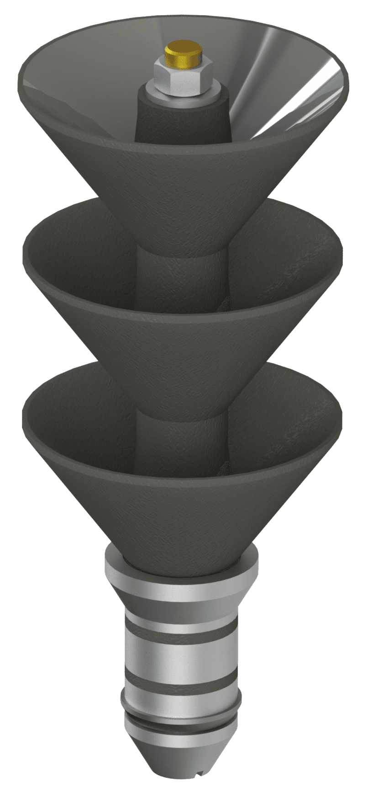

Drill wiper plug

The Drill Wiper Plug is designed to wipe residual cement from the internal surface of the drill pipe during cement displacement. The plug travels through the drill pipe and subsequently engages with the Wiper Plug, providing positive engagement of the two plugs and completing the cement displacement sequence. Features an anti-rotation mechanism that securely holds the plug during drill-out for reliable and efficient removal.
- Category
- Liner hangers
Part of solutions
PL-LH/HDGLTP/PBRHydraulic dual-grip liner hanger with liner top packer & polished bore receptacleIncluded

PL-LH/HSGLTPIS/PBRHydraulic single-grip liner hanger with liner top packer, inner string & polished bore receptacleIncluded

PL-LH/HDGDRLTPHydraulic dual-grip dual-row liner hanger with liner top packerIncluded

Can be combined with


Show all (18)Show fewer


Request Drill wiper plug
Tell us the casing, the depth and the conditions, and we will come back with a selection.
Contact us